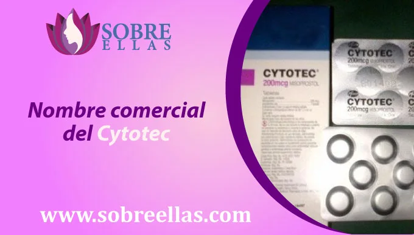
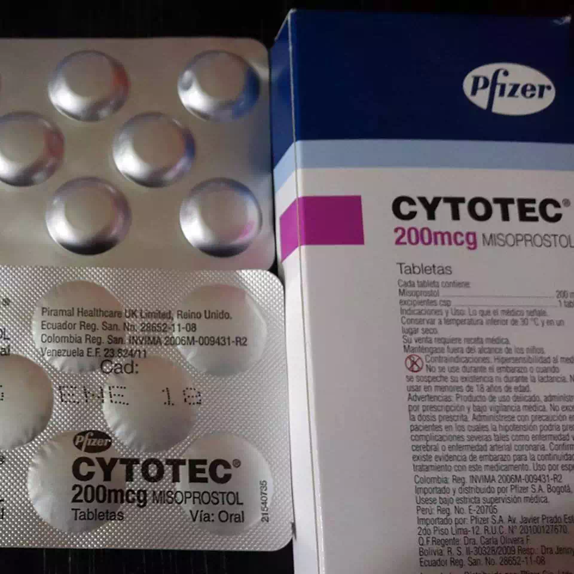
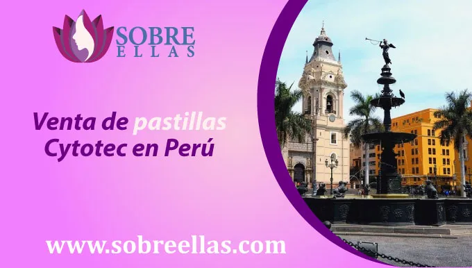
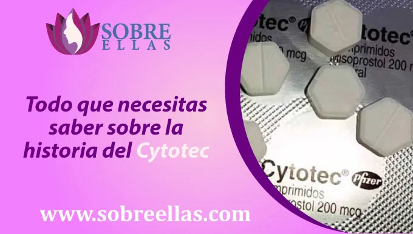
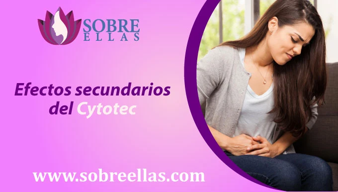
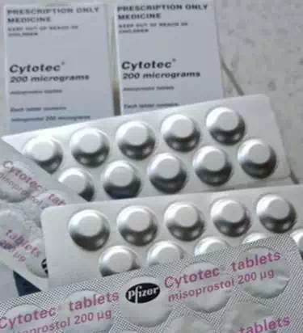

Comprar pastilla abortiva Cytotec en Perú e instrucciones para conseguirla
-
addContenido
Nombre comercial del Cytotec
 La mifepristona como pastillas abortivas. También es conocida por su nombre comercial, RU-486. Este medicamento fue aprobado por primera vez para su uso en los Estados Unidos a principios de la década de 1990. Esta pastilla abortiva es consumida por las mujeres que desean interrumpir sus embarazos, por diversos factores. La mifepristona también está disponible como un medicamento genérico.
Venta de pastillas Cytotec en Perú
Las pastillas abortivas Cytotec han llegado a la venta en Perú, debido a su popularidad en diversos países. La venta de estas pastillas ha provocado mucha controversia en el país, muchas personas siguen oponiendose al aborto de forma legar y ven esto como una forma de facilitar el aborto que desean. Uno de los motivos principales por la que su popularidad incremento, es debido a su precio, dentro del mercado de la venta, lo puedes encontrar varias tarifas y tendrás la libertad de escoger la que mas te convenga, permitiendo que el aborto sea más accesible y asequible para las mujeres.Este es un procedimiento legal y seguro, permitiendo que las mujeres obtengan el aborto que necesitan. Es posible que la venta de este medicamento permita que más mujeres logren abortar en caso de violacion, falla del metodo anticonceptivo, razones economicas, etc, pero también es posible que lleve a más personas a darse cuenta de la importancia del acceso al aborto y que este sea seguro de y legal a la hora de practicarlo.
Todo lo que necesitas saber sobre la historia del Cytotec
Cytotec fue estudiada y patentada por la compañía alemana Bayer en 1992. Esta pastilla fue ofrecida a la industria farmacéutica a partir de 1996. Las primeras personas que tomaron Cytotec fueron mujeres que estaban buscando un método efectivo y seguro para abortar, es ahí donde la pastilla se fue volviendo muy popular durante los años 1990 y 1991. A pesar de esto, Bayer tuvo que enfrentar diversos litigios por el uso de la pastilla abortiva. La compañía alemana pagó millones de dólares a mujeres que abortaron con Cytotec. La situación cambió en 2009. La FDA (agencia de regulación de los medicamentos) estableció una serie de requisitos para que la pastilla abortiva Cytotec se pudiera vender en EE.UU, una de las cuales, fue la solicitud de registro con el nombre de “Mifepristone”. Actualmente esta pastilla abortiva Cytotec se la conoce también como mifepristona. Las principales razones por las que la FDA estableció estos requisitos para la pastilla abortiva Cytotec fueron: la posibilidad de que la pastilla fuera vendida como un método para controlar el ciclo menstrual, el riesgo de que la pastilla fuera utilizada para abortar a mujeres de edad avanzada , y el riesgo de que la pastilla fuera utilizada para abortar a mujeres que estaban embarazadas por causas no legales.
Efectos secundarios del Cytotec
Algunos de los efectos secundarios de estas pastillas abortivas pueden incluir:
- -Náuseas
- -Vómitos
- -Mareos
- -Aturdimiento
- -Fatiga
- -Dolor de cabeza
- -Disminución de la presión arterial.
A su vez puede causar diarrea y, en casos raros, una reacción alérgica grave. Algunas mujeres que han probado este medicamento para abortar, no experimentan efectos secundarios de la mifepristona, mientras que otras si han presentado efectos secundarios que son leves o moderados. Si los efectos secundarios son graves, la mujer puede necesitar dejar de tomar el medicamento y buscar atención médica.
Su costo:
El costo de las pastillas abortivas Cytotec cuyo componente es el MISOPROSTOL puede variar según la dosis que necesite:
Para Embarazos con menos de 10 semanas
- 8 Pastillas Cytotec + Los medicamentos para combatir el malestar
- 250 Soles
- 2 Dosis
- Original de Pfizer
- Entregas personales en Lima y envío express a cualquier provincia
- Entrega garantizada
- Instrucciones
- Asesoría personalizada
- Ayuda en línea mediante nuestro Whatsaap
Para Embarazos con menos de 12 semanas
- 12 Pastillas Cytotec + Los medicamentos para combatir el malestar
- 300 Soles
- 3 Dosis
- Original de Pfizer
- Entregas personales en Lima y envío express a cualquier provincia
- Entrega garantizada
- Instrucciones
- Asesoría personalizada
- Ayuda en línea mediante nuestro Whatsaap
Comprar las pastillas abortivas
La compra puede solicitarse de dos maneras:
Si te encuentras en la Ciudad de Lima la entrega puede ser de manera personal, incluso el mismo día, solo comunícate con nosotros vía WhatsApp al teléfono que aparece en esta página para que nuestro personal se ponga de acuerdo contigo.
Si te encuentras en alguna provincia del Perú la entrega únicamente puede ser mediante encomienda (de 24 a 48) ya que el producto se distribuye desde la Ciudad de Lima, la compra se hace mediante depósito bancario o transferencia.
Luego de haber hecho el pago sigue las instrucciones
Solamente necesitamos que nos notifiques tu depósito, ya sea por teléfono dándonos el número de operación que aparece en el Boucher de pago o vía WhatsApp enviando el comprobante de pago fotografiado para corroborar el deposito.
Para que el paquete llegue a tu destino solo necesitaríamos los siguientes datos.
- Nombre de la persona que recibe:
- DNI:
- Destino:
¿Prefieres pasar por tu paquete a un lugar cercano a tu distrito?
Si prefieres que el paquete no llegue a tu domicilio, éste puede llegar a cualquiera de los puntos de entrega según el distrito en el cual usted viva. Para obtener los medicamentos debe haber hecho previa solicitud de entrega al contacto que aparece en nuestra página. Allí coordinaremos con usted la hora y lugar de entrega.
Después de que nos notifiques tus datos y hacia dónde quieres que llegue, nosotros te enviaremos la fotografía del envío con el número de guía. Esto te dará más tranquilidad porque estarías consciente de que estas realizando una compra segura.
¿Cómo me garantizan que el paquete me va a llegar?
Podrás solicitar comprobantes de envío en cualquier momento para comprobar nuestra seriedad en este servicio. Nosotros te mostramos imágenes del producto y de su fecha de caducidad para que no haya ningún problema. Podrá contar con nuestra asesoría y seguimiento mediante teléfono, WhatsApp y correo electrónico.
¿Cómo me es entregado él envió?
Los paquetes van completamente discretos, dentro de un empaque sellado y completamente seguro.
¿Tienes más dudas?
Si tienes más dudas respecto al proceso de compra, llámanos al tlf que aparece en esta página o agregamos a tus contactos de WhatsApp.